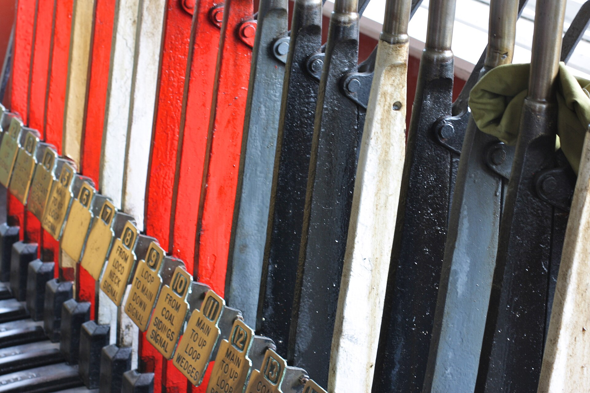

A new human task is evaluated before it reaches Anthropic.
Tool calls and /goal continuations keep the task’s model.
The next task is free to switch up or down.
AutoRouter is a local gateway for Claude Code. It evaluates each request and routes it to Haiku, Sonnet or Opus.
npm install -g claude-autorouterIllustration only. These few rules run in your browser; the real verdict comes from the evaluator model on your machine or from Jev.
A new human task is evaluated before it reaches Anthropic.
Tool calls and /goal continuations keep the task’s model.
The next task is free to switch up or down.

First, install it and run setup.
npm install -g claude-autorouter
claude-autorouter setupSetup uses your Claude subscription and the local Ollama evaluator, so it asks for no evaluator key. Add --pull to download the default model.
Then check that everything is healthy.
claude-autorouter doctorRun doctor --evaluate-local to time the local evaluator on synthetic prompts. It makes no Anthropic or Jev calls and downloads nothing.
Finally, launch Claude Code through the gateway.
cd /path/to/project
claude-autorouter claude --permission-mode autoYour installed, unmodified Claude Code opens with a temporary status line:
● AutoRouter · Opus 5.5 · ready · Jev 210ms
● AutoRouter · Sonnet 5.5 selected · Auto floor from Haiku · Jev 220ms
“Selected” means Anthropic has not reported the serving model yet.
Anthropic still receives the complete request in every mode. Savings are estimates against an Opus baseline; they do not measure subscription bills.
No. AutoRouter is independent and is not affiliated with, endorsed by, or sponsored by Anthropic.
No. Claude owns authentication, tool permissions and safety review. AutoRouter does not replace permission verdicts.
Bounded task excerpts, with recognizable credentials and personal identifiers redacted first. They go to your loopback Ollama, or to TypeSafe if you choose Jev.
No. It is an API-equivalent estimate from recorded token counts. It excludes evaluator and local compute costs.
It can reduce cache reuse, so a switch is not always free.
Run ordinary claude, and it bypasses routing.
The button copies the commands. Nothing leaves your machine until you run them.
npm install -g claude-autorouter
claude-autorouter setup --pull
claude-autorouter claude